“We light a candle for them — that their memory may never be laid to rest.”At the Nova memorial · Re'im
Amler's Private Tour · for the Sacharowitz Family
Re'im · Western Negev · Israel
NOVA
Where the music stopped — 07 October 2023
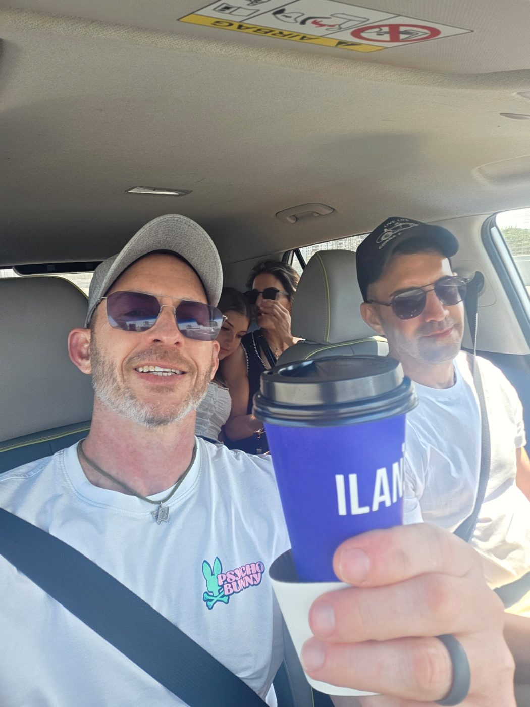
The Sacharowitz family with their guide, Amler
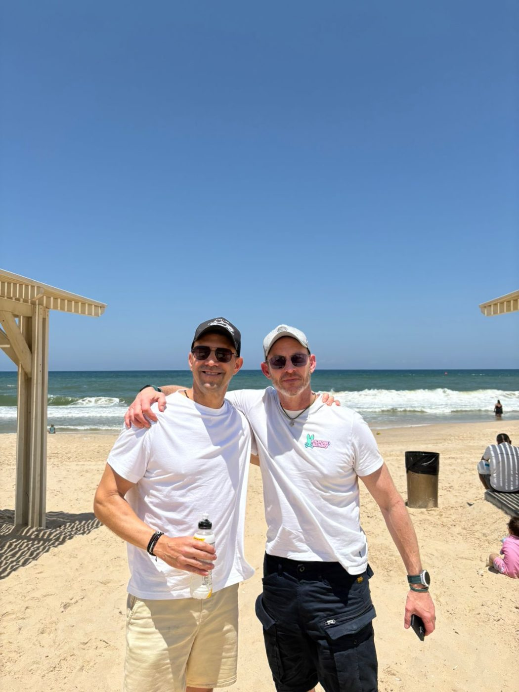
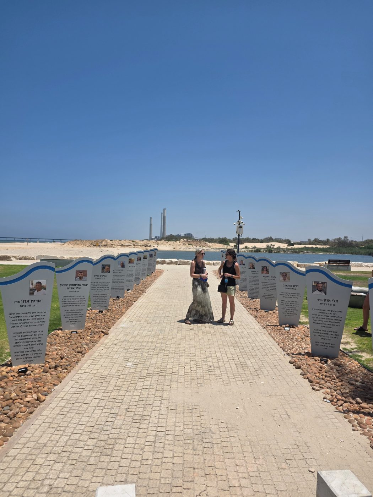
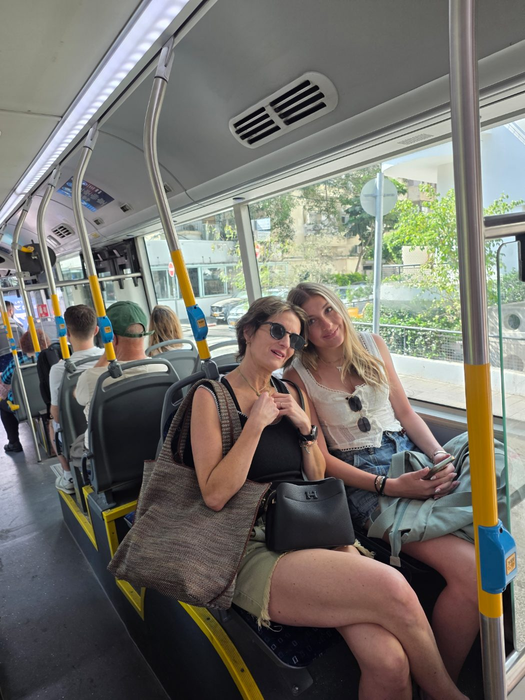
A dawn gathering of thousands who came to dance for peace became the deadliest single site of the October 7 attacks. This private tour retraces that day with care — a journey of remembrance for those who came to bear witness.
A note on the date. The attack took place on the morning of Saturday, 7 October 2023 (the Jewish holiday of Simchat Torah / Shemini Atzeret). Every fact on this page is drawn from reputable, published sources — listed in full at the end.
Scroll to remember ↓
On the ground today · The Nova grounds at Re'im
Standing where it happened
The festival field at Re'im is now a living memorial — a photograph and a candle for every life taken, and families who return each day to remember. These are our own photographs from the site.
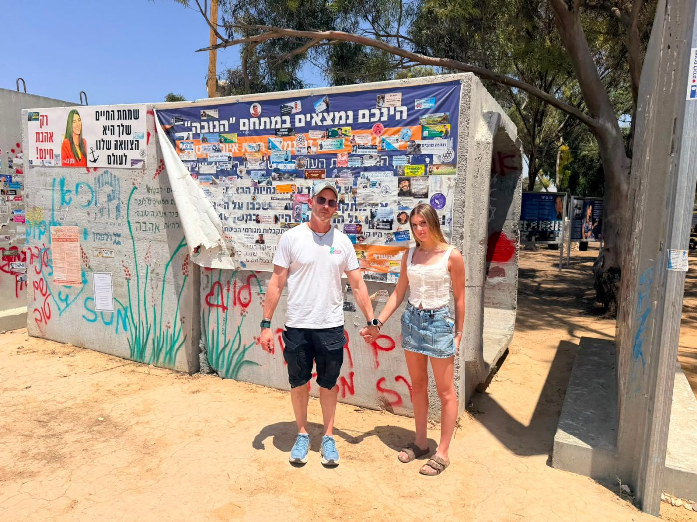
The heart of the site
At the entrance to the festival field stands a wall of photographs, flags and messages — “you are now within the Nova compound.” Families gather here every day to remember.
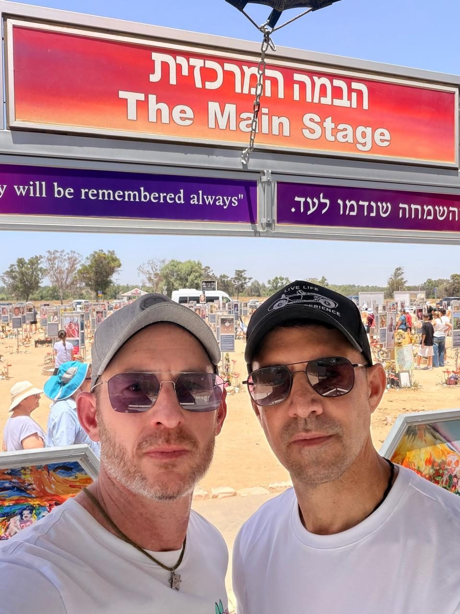
The Main Stage. Where thousands danced through the night. The sign now stands over a field of photographs; the banner beneath it promises the joy silenced here will be remembered always.
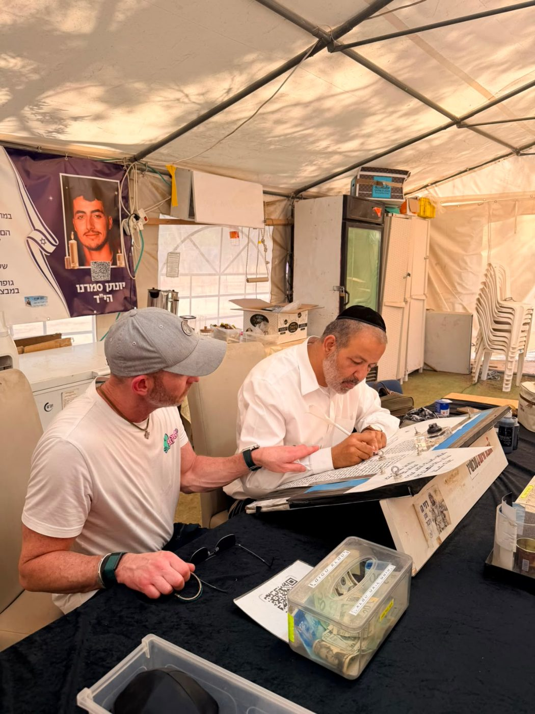
A Torah written in their memory. In a tent at the site, a scribe completes a memorial Sefer Torah — each letter inscribed in honour of one of the fallen, turning grief into a living act of remembrance.
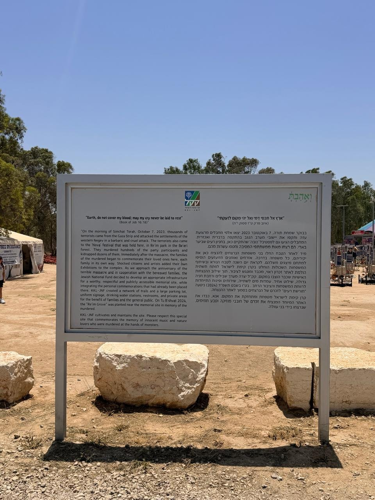
The site's dedication. The Jewish National Fund (KKL-JNF) developed the memorial together with the bereaved families, planting the "Re'im Grove" on Tu B'Shvat 2024. The sign opens with the verse “Earth, do not cover my blood; may my cry never be laid to rest” (Job 16:18), and asks visitors to respect a place that remembers the music and nature lovers murdered here.
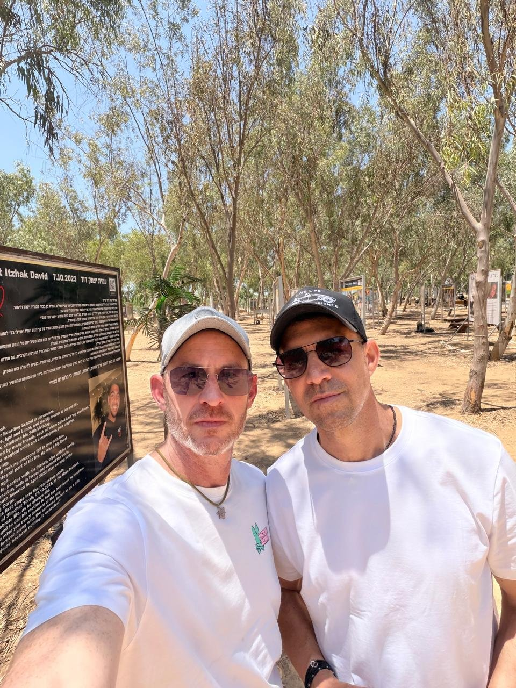
Warren & family, in the grove. Beside the stele of Amit Yitzhak David — one of the hundreds who came to celebrate and never returned — among the eucalyptus where a photograph now stands for every life.
Remembered, one by one
Families have placed hundreds of individual memorials across the field. A few we stopped before:
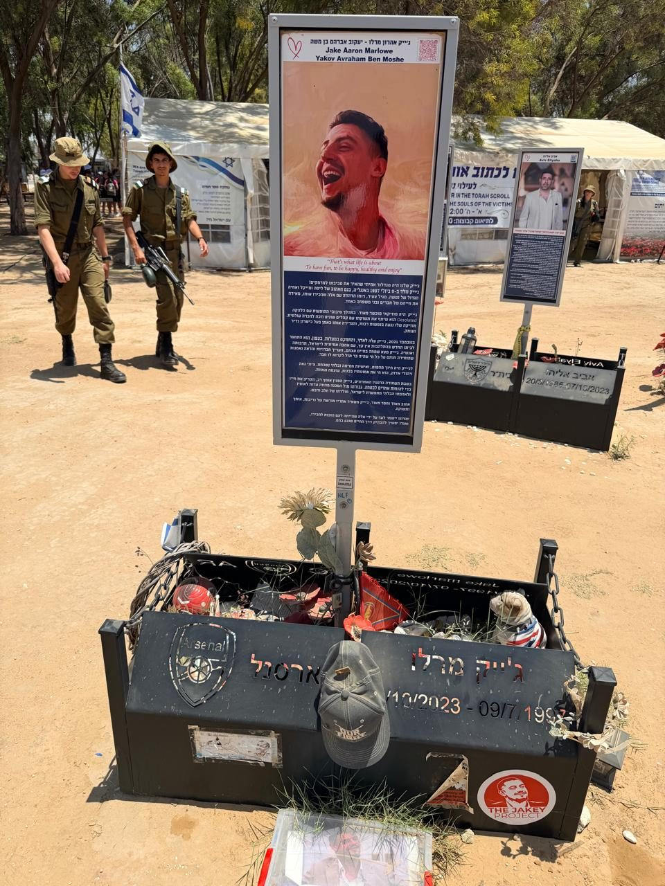
Jake Marlowe · 26 A British-Israeli musician working security at Nova, who tried to lead partygoers to safety before he was killed.
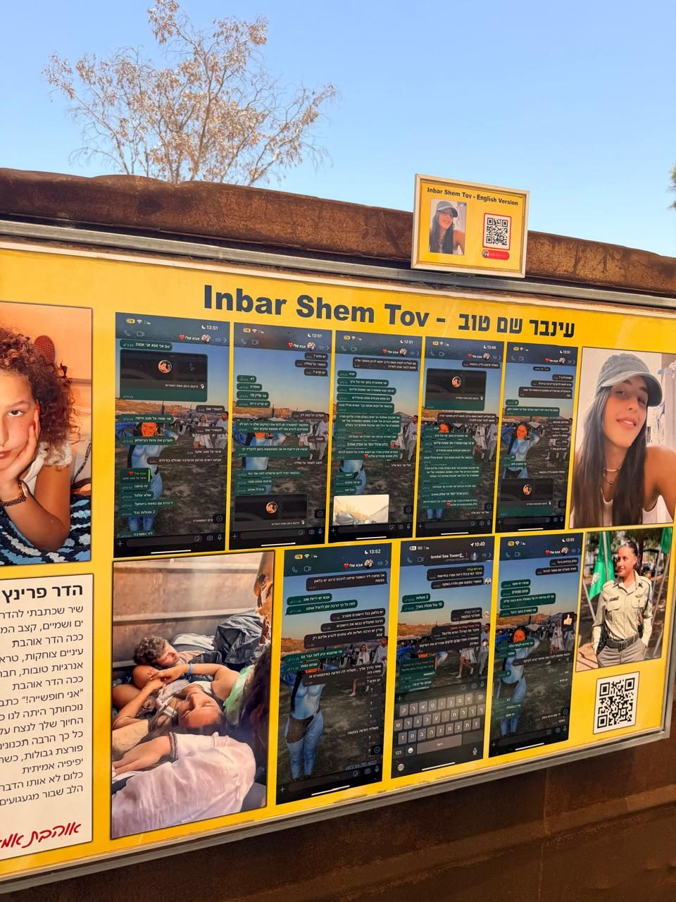
Inbar Shem Tov · 22 A young woman from Holon who dreamed of travelling the world as a "digital nomad."
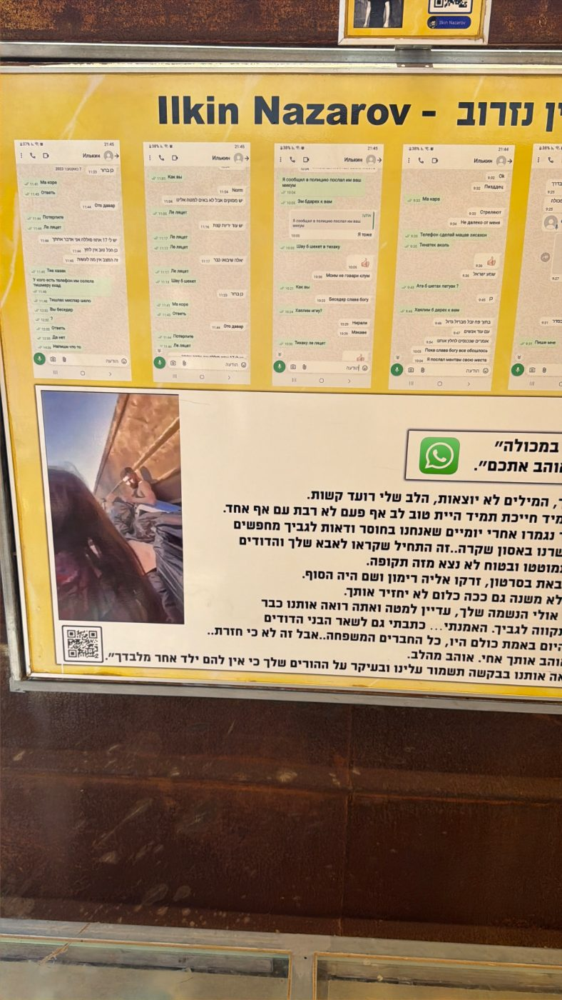
Ilkin Nazarov · 29 An only child from Kiryat Yam who messaged his father that he was hiding in a shelter, before contact was lost.Bearing witness Standing at the Main Stage, among the photographs of the young people who came here to dance.
One tribute here honours Yonatan Samerano, 21, a Tel Aviv DJ killed after fleeing the festival, whose body was held in Gaza until 2025 — and hundreds more line the field. Tap any photograph to enlarge. 📍 Open the Nova memorial in Google Maps ↗
The Wider Battle
Iconic battles & key sites of October 7
Nova did not happen in isolation. The same morning, the communities and bases ringing the festival fought for their lives — some overrun, some defended against staggering odds. These reputable reports map the wider battlefield a visitor crosses on the way to Re'im.
The Wall Street Journal
How the attack was planned in plain sight
A WSJ visual investigation showing how Hamas openly rehearsed the multi-front assault for years — essential context for everything that followed at dawn.
Keshet News 12 · via All Israel News
The Battle of Sderot Police Station
The siege of the Sderot police station — one of the day's most iconic urban battles — and the fight to retake the building the militants had seized.
KAN 11 · via All Israel News
Six against a hundred: the defence of Kibbutz Re'im
How a six-member civilian emergency squad held off roughly a hundred attackers at Kibbutz Re'im, the community closest to the festival grounds.
Ruderman Family Foundation
The woman who saved Kibbutz Nir Am
At 25, security coordinator Inbal Rabin-Lieberman armed and led her community's defence team — Nir Am repelled the assault without losing a single resident.
i24NEWS English
The battle at the Nahal Oz base
Survivors recount the fight at the Nahal Oz outpost — home to the young lookouts who had warned for months that something was coming.
The Times
Unseen footage of the southern base battles
Israeli military footage of the close-quarters fighting around the Re'im area and the Gaza Division sector as forces moved to retake the ground.
PBS NewsHour
Kibbutz Be'eri, a year on
PBS returns to Be'eri — one of the worst-hit communities, where more than a tenth of residents were killed — and the long road back.
i24NEWS English
Kfar Aza rebuilds
Militants took Kfar Aza in an hour; recapturing it took the IDF days. This report follows the shattered kibbutz as it begins to rebuild.
PBS NewsHour
Nir Oz begins again
Proportionally the hardest-hit community — around a quarter of residents killed or taken hostage — Nir Oz confronts the slow work of return.
The National News
The seaborne assault repelled at Zikim
Military footage of the attempted amphibious landing at Zikim beach, turned back by Israeli naval and base defenders on the coast north of Gaza.
ABC News
Rescue: Noa Argamani and three others
A rare note of hope — the June 2024 operation that freed Nova attendee Noa Argamani and three fellow hostages from captivity in Gaza.
Every clip is from a published, reputable source; graphic and shock-titled uploads were deliberately excluded. Two items (Kibbutz Re'im, Nir Am) reach the page via foundation channels re-airing broadcast segments — the original broadcaster is credited where applicable.
The Festival, in Numbers
The Supernova Sukkot Gathering
An all-night open-air trance festival — the Israeli edition of Brazil's Universo Paralello — held in a eucalyptus grove near Kibbutz Re'im, about 5 km from the Gaza border.
~3,500
people present at dawn (estimates 3,000–4,000)
6:29am
the rockets began; the music stopped
378
killed at the site 344 civilians · 34 security personnel
44
taken hostage into Gaza
~5km
from the Gaza border fence
The Nova toll represents roughly half of all civilians killed across the entire October 7 assault (~1,200 people killed, 251 taken hostage that day). It was the single deadliest location. Figures per the Israeli investigation released April 2025; the count rose over time as victims were identified.
What Nova Was
A festival of peace, love and dance
Nova was built on the psytrance ideals of unity and connection. Young people travelled from across Israel and the world to greet the sunrise together over the Sukkot holiday weekend — a field of music, art installations, and open-air dance floors under the desert sky.
By sunrise on 7 October, the border only a few kilometres to the west had been breached in scores of places. What began as sirens and distant rockets became, within an hour, the deadliest terror attack in Israel's history. The people here were unarmed civilians — dancers, medics, bartenders, photographers, friends.
This page tells their story with care: the sequence of that morning, the geography that shaped it, the acts of courage within it, and how the site is honoured — and visited — today.
At a glance
Facts every visitor should know
The site is now the Nova Festival Victims Memorial at the Re'im parking lot — free and open to the public.
Red anemones (kalaniot), which bloom in this forest each winter, are the memorial's symbol for the young lives lost.
Through the hostage releases that concluded in late 2025, the living survivors from Nova returned home, and nearly all of the fallen were brought back to be laid to rest.
The Morning of 7 October 2023
A reconstructed timeline
Times are local and approximate, drawn largely from the official Israeli investigation as reported by The Times of Israel, Ynet, CNN and others. They reflect successive waves rather than a single assault.
6:29–6:30 am · The rockets begin
A massive rocket barrage from Gaza streaks over the site. The music is cut as rockets become visible overhead — the opening of a wider assault of thousands of rockets and a mass border breach.
~6:35 am · Evacuation ordered
The senior police officer on duty orders the festival shut down and evacuated because of the unusually heavy rocket fire. Minutes later, officers are pulled away to defend nearby towns also under attack.
6:30–7:00 am · The border is breached
Hamas-led militants cross into Israel by vehicle, motorcycle and motorised paraglider. An IDF report later estimates roughly 6,000 attackers breached the border that morning across some 119 points.
Elsewhere · by sea
~6:29–7:30 am · The seaborne assault at Zikim
On the coast north of Gaza, naval commandos approach Zikim beach in small boats. The Israeli navy destroys most of the flotilla at sea; the few who reach shore are stopped at the Zikim base — one of the few places the attack is largely repelled at its entry point.
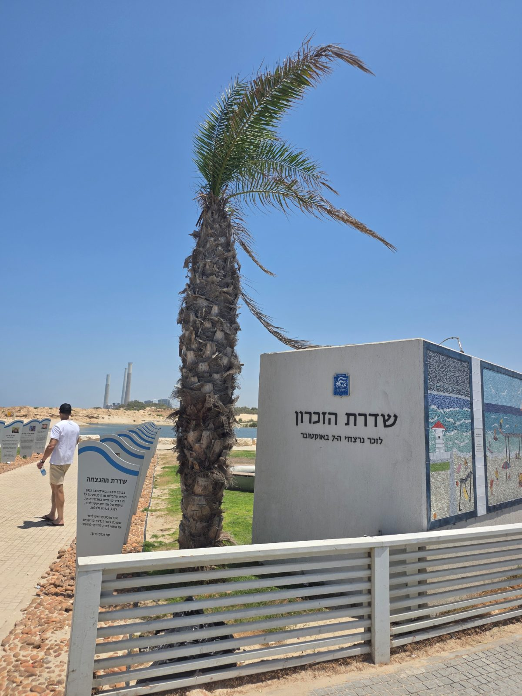
The seafront today — now the Avenue of Remembrance. Tap to enlarge ↗Warren & family on the shore at Zikim, today. Tap to enlarge ↗
Elsewhere · Sderot
~6:58–7:00 am · The Sderot police station is seized
Around 40 gunmen enter the town of Sderot and take over the police station, turning it into a fortress. A day-long battle by police, IDF, Yamam and Shin Bet ends only when the building is demolished overnight.
~7:00 am · Mass flight onto Route 232
A second siren sends festival-goers running for their cars. Thousands stream onto Route 232 and the surrounding dirt roads — the only designated way out.
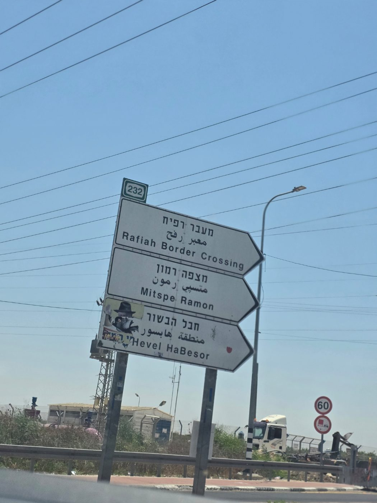
Route 232 today — the road the festival-goers fled along. Tap to enlarge ↗
~8:00 am · The roads become the trap
By now about 90% of attendees have left the grounds, but many are caught in traffic. A militant force — roughly 110 fighters in some 14 pickups and on motorcycles — advances toward the area, having captured junctions along the highway.
8:12–8:20 am · Roadblock overrun
Militants open fire on an under-manned police roadblock on Route 232 and fire an RPG, then storm past it onto the festival grounds and the escape roads. Officers open a dirt track east into the fields, a decision that lets thousands escape on foot.
Morning · The roadside shelters
Fleeing attendees shelter in small concrete roadside bomb shelters along Route 232. Several become sites of massacre — later known as the "shelters of death." It is here that Aner Shapira and Hersh Goldberg-Polin make their stand (below).
~10:00 am · The scale becomes clear
The IDF General Staff does not grasp that a mass-casualty event is unfolding at Nova until around this hour — roughly three hours in — a central failure identified by the later investigation.
~11:20 am · First troops arrive
After a soldier on leave phones his commander, a Givati Brigade battalion commander rushes in with about 11 soldiers and begins clearing the area.
~1:30 pm · The grounds are secured
It takes until roughly early afternoon for the IDF to regain full control of the festival site. Clearing operations across the Gaza-envelope region continue for days. 44 people have been taken hostage into Gaza.
The Region
Geography of the morning
The festival sat in the Gaza Envelope (Otef Aza), about 500 m east of Route 232 and ~5 km from the border. Escape routes ran north and south along a single road — and, for many, east across open fields to safety.
Festival site / memorial Kibbutzim Roadside shelters Route 232 Eastward escape
Schematic — not to scale. Memorial coordinates: 31.39778°N, 34.47167°E (Plus Code 9FXC+92, Re'im), reached via Route 232.
Key Locations
Places that hold the story
The Grounds
The festival field
An open field and eucalyptus grove by the Re'im parking lot. Dance floors, tents and art installations stood where the memorial's photographs and anemone sculptures are now planted.
The Only Road
Route 232
The single north–south highway hugging the Gaza border. Directed onto it around 7 am, fleeing attendees met militants who had already seized its junctions near Sa'ad, Alumim, Be'eri and Re'im.
The Shelters
The "shelters of death"
Small concrete roadside rocket shelters (~4×2 m) built against Gaza rocket fire. On 7 October, groups crowded inside as grenades were thrown in. CNN identified at least four along this stretch.
Toward Safety
The eastern fields
The route that saved the most lives: a dirt track opened east into agricultural fields, away from Gaza — thousands crossed on foot toward Moshav Patish and on to Beersheba.
Neighbours
The kibbutzim
Re'im, Alumim, Be'eri, Sa'ad and Kissufim ring the site. Several were attacked the same morning; some communities' civilian defence teams held off the assault.
Refuge
Moshav Patish
The farming community to the east that took in and treated many survivors, reconnecting them with their families in the hours after they fled.
Acts of Courage
Light within the darkness
Amid the horror, ordinary people did extraordinary things — soldiers on leave, volunteers, and strangers who turned back toward danger to save others.
Aner Shapira, 22
An off-duty soldier who took position at the mouth of a roadside shelter near Re'im where roughly two dozen young people had hidden. As militants threw grenades inside, he caught and hurled them back out — about seven times — before the eighth took his life. He is credited with saving many of those beside him.
Hersh Goldberg-Polin, 23
American-Israeli, in that same shelter, he helped throw grenades back out and lost part of his left arm before being taken hostage. Held for nearly eleven months, his parents became global voices for the hostages. He was killed in captivity; his body was recovered in August 2024. His story became one of the most recognised of the entire crisis.
The ZAKA volunteers
Israel's volunteer emergency and body-recovery organisation mounted its largest-ever mobilisation, tending to and recovering the dead from the grounds and the roads — civilians, not soldiers. Many now live with the weight of what they carried; a large share have struggled with PTSD.
The rescuers who turned back
Off-duty police and soldiers, and civilians who had already escaped, drove back into the danger zone again and again to ferry the trapped to safety — some at the cost of their own freedom or lives. Farmer Rami Davidian is widely credited with rescuing hundreds using back roads he knew by heart.
The Wider Commemoration
How the world has remembered
Archival photographs of the commemoration beyond the site itself — Hostages Square, the travelling exhibition, and vigils around the world. (Our own photographs from the Re'im grounds appear further below.) All images freely licensed via Wikimedia Commons; credits beneath each.
Portraits of the fallen on the festival grounds at Re'im.Zeev Stein / PikiWiki Israel · CC BY 2.5The Nova memorial installation near Kibbutz Re'im.Shlomo Roded / PikiWiki Israel · CC BY 2.5Flowers and greenery where families planted trees for the murdered.Baruch Niv & Sara Polak / PikiWiki Israel · CC BY 2.5The Re'im parking-lot memorial complex.Israel Preker / PikiWiki Israel · CC BY 2.5Family-built commemoration corners in the eucalyptus grove.Shlomo Roded / PikiWiki Israel · CC BY 2.5A Nova installation at Hostages Square, Tel Aviv, January 2024.Chenspec / Wikimedia Commons · CC BY-SA 4.0Reconstructed tents at the "06:29" exhibition, Expo Tel Aviv.Chenspec / Wikimedia Commons · CC BY-SA 4.0A memorial visit to the Gaza-envelope region on the first anniversary.Kobi Gideon / GPO · CC BY-SA 3.0The "06:29" commemorative display — named for the minute the attack began.Chenspec / Wikimedia Commons · CC BY-SA 4.0Yellow ribbons — the symbol calling for the hostages' return.Chenspec / Wikimedia Commons · CC BY-SA 4.0A community commemoration marking the anniversary of the attacks.Maryland GovPics / Joe Andrucyk · CC BY 2.0
Watch & Understand
Documentaries & survivor testimony
Reputable broadcaster reports and official documentary trailers. Tap any thumbnail to play. Some feature emotional survivor testimony — please watch with care.
CBS News · Official Trailer
"We Will Dance Again"
Trailer for the Emmy-winning feature documentary (BBC / MGM / Paramount+) reconstructing the morning almost entirely from attendees' own phone footage — the definitive filmed account.
BBC News
"We danced with joy, then hid among the dead"
A dignified BBC mini-documentary in which survivors retrace their steps hour by hour — the sirens, the flight to the cars, and the hours spent hiding in the fields.
yes Studios · Official Trailer
"#NOVA"
Trailer for the documentary assembled entirely from real-time footage — phone videos, dashcams and security cameras — that captured the event as it unfolded.
VICE News
Surviving Nova
A longer-form field report that returns to the site and gives extended voice to survivors and witnesses, tracing how a peaceful rave became a mass-casualty event.
BBC Newsnight
"We realised no one was coming to save us"
A Newsnight studio segment with survivors on the long wait for rescue — the central failure that the later Israeli investigation would confirm.
CBS Mornings
Survival stories from Nova
A broadcast feature built around the "We Will Dance Again" documentary, interviewing survivors about the moments that saved their lives.
CBC News: The National
Surviving trauma, two years on
An anniversary mini-documentary following survivors through recovery — the lasting mental-health toll, and how the community keeps memory alive.
CBS News
A survivor on instinct and escape
One attendee's measured account of the split-second decisions — which way to run, when to hide — that carried him out of the killing zone alive.
10 News · Australia
Survivors speak on the anniversary
Survivors reflect one year later on loss, guilt and resilience — and on the promise that gives the memorial its name: that they will dance again.
The Wider Map
Key sites of October 7
The same morning, the whole Gaza envelope was attacked at once — by land and by sea. These are the places a visitor passes near on the way to Re'im, in a line each. Figures are approximate and widely reported.
Zikim beach
seaborne · ~17 killed
Naval commandos landed by boat on the coast north of Gaza. Most of the flotilla was destroyed at sea — one of the few assaults repelled at its entry point.
Sderot
~53 killed
Gunmen seized the town's police station and held it for a day; it was demolished to end the siege. The ruin is now a memorial and heroes' park.
Kibbutz Be'eri
~130 killed · ~30 taken
One of the worst-hit communities; recapturing it took the IDF days. Much of the kibbutz was destroyed.
Kibbutz Kfar Aza
~62 killed · ~19 taken
Overrun within an hour; a symbol of the border communities caught unprotected at dawn.
Kibbutz Nir Oz
~47 killed · ~76 taken
Proportionally the hardest hit — about a quarter of residents killed or abducted, one of the day's highest hostage tolls.
Nahal Oz
~68 killed · ~10 taken
The IDF base — home to the young surveillance spotters who had warned for months — and its adjacent community were overwhelmed.
Kibbutz Nir Am
0 residents killed
A rare successful defence: coordinator Inbal Rabin-Lieberman armed the standby squad and, with a Golani company, held the gate.
Netiv HaAsara
~15–20 killed
The moshav closest to Gaza's northern edge, struck in the first minutes of the assault.
Nova sat at the centre of this map. Watch the reports from these sites below.
On the ground today · The Ashkelon seafront
Where the sea attack came ashore
These photographs were taken by our own team at the Avenue of Remembrance (Sderat HaZikaron) on the Ashkelon seafront — the Mediterranean shore, beside the power-station stacks, along which the seaborne assault came in near Zikim at first light. Its dedication reads: “In memory of those murdered on the 7th of October.” This is what your group will stand before on the day.
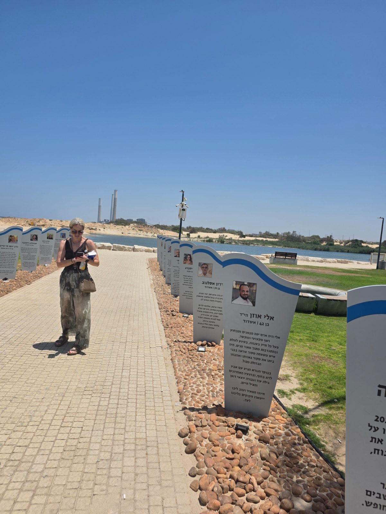
A promenade of remembrance by the sea
Along the Ashkelon shore, a walkway of wave-crested steles now carries the portrait and life story of each person killed — set against the same water the attackers crossed at dawn. The twin stacks on the horizon are the Ashkelon power station, on the coast just north of the Zikim landing point.
The entrance monument. Its inscription names the site — “Avenue of Remembrance, in memory of those murdered on 7 October” — beside the emblem of the city of Ashkelon. A companion plaque recalls that at dawn that Saturday attackers came from the sea onto the southern beaches, and honours those who had come only to rest by the shore, closing simply: “May their memory be blessed.”
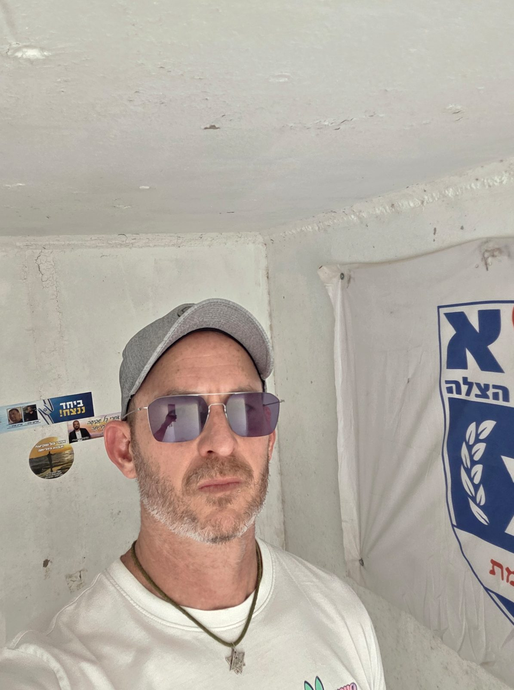
Bearing witness, in person. To stand on this shore is to grasp what a map cannot — how close the sea is, how ordinary the beach, and how the memory of that morning is now woven into the coastline itself.
Established by the victims' families with the Jewish National Fund (KKL) on the site itself — photographs of each person, Israeli flags, a planted memorial forest, and red anemone sculptures. It has become one of the most-visited sites in the country.
The "Car Wall" at Tkuma
West of Moshav Tkuma, roughly 1,600 burned and bullet-scarred vehicles — many from the Nova site and Route 232 — were gathered into a wall of remembrance. They were first collected so authorities could recover and identify victims' remains; the site became one of the principal memorials to the massacre.
The Nova Exhibition
"The Moment Music Stood Still" recreates the festival — tents, dance floor, recovered belongings. First shown at Expo Tel Aviv, it has toured New York, Los Angeles, Miami, Washington, Buenos Aires, Berlin and more, drawing over 600,000 visitors. Proceeds support the Tribe of Nova Foundation.
The films
We Will Dance Again (2024) won an Emmy for Outstanding Current Affairs Documentary; Supernova: The Music Festival Massacre and #NOVA assemble survivor testimony and attendees' own footage into an enduring record.
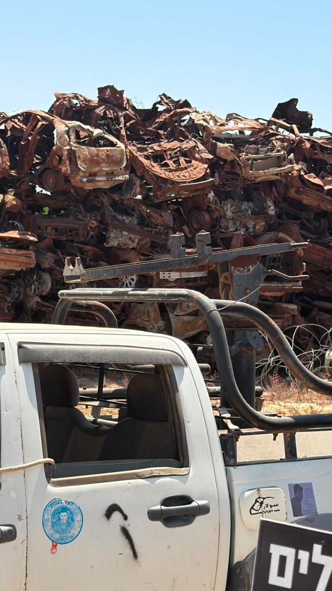
The Car Wall, Tkuma. A mountain of rusted, burned vehicles — cleared from the roads and the festival field, and now stacked as a single, staggering monument to the scale of that morning.
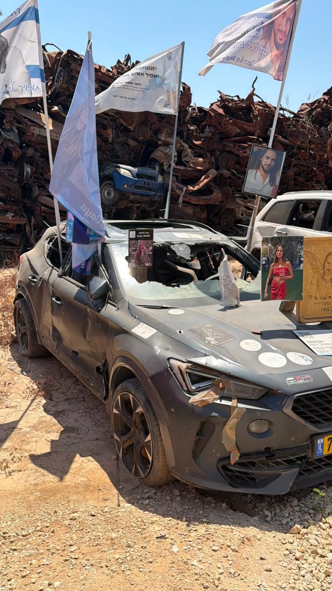
Every car, a story. Families have marked individual vehicles with portraits and flags — a face and a name returned to the metal that carried their loved ones.
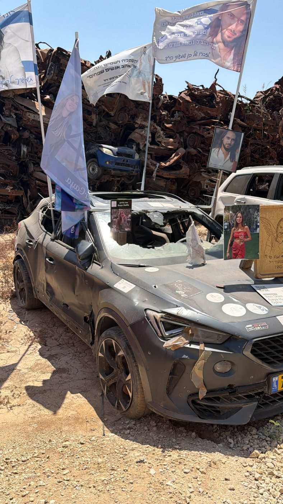
Flags for the fallen. One car flies banners for those it remembers — among them Gaya Halifa, 24, and Ben Shimoni, 31, who escaped the festival but drove back again and again, saving nine people before he was killed.
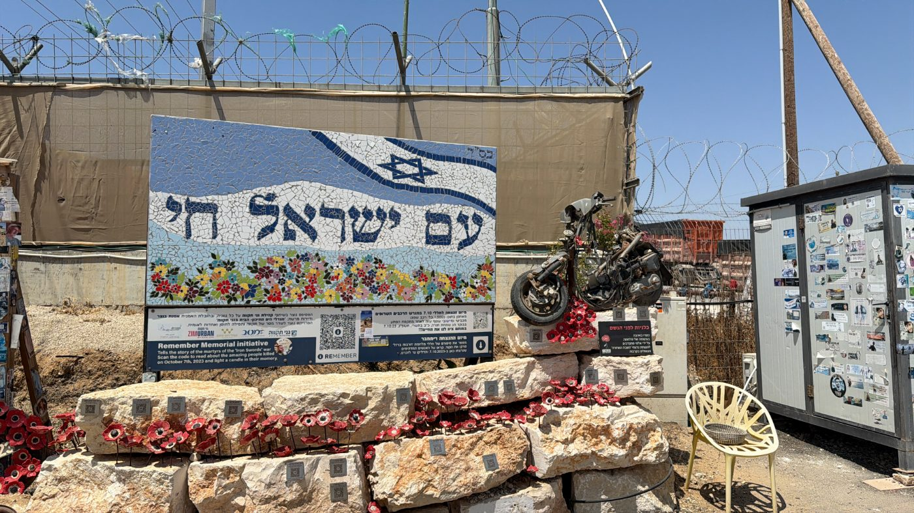
"Am Yisrael Chai" — the People of Israel live. A mosaic and the "Remember" initiative invite visitors to scan a code, read each victim's story, and light a candle in their memory. Red anemones — the flower of this land — bloom in ceramic around the stones.
Visiting Today
Coming to bear witness
The Nova Festival Victims Memorial welcomes visitors who come to pay their respects. If you are travelling to the region now, here is what to know.
Cost
Free. The memorial is an open-air site maintained by the families and JNF/KKL.
Hours
Open-air and effectively accessible around the clock; daylight visits (~08:00–17:00) are recommended.
Getting there
By car via Route 232, at the Re'im parking lot. There is no direct public transport — drive or join a guided tour.
Coordinates
31.39778°N, 34.47167°E Plus Code 9FXC+92, Re'im.
This is an active place of mourning — families are often present. Move gently and quietly, and photograph respectfully.
Dress modestly and bring a passport — the wider border area has checkpoints.
Nearby kibbutzim (Be'eri, Kfar Aza, Nir Oz) are generally restricted — access usually requires an authorised or guided visit.
This is a border region. Check current conditions and Home Front Command guidance before and during your visit.
Two things are often confused: the Memorial at Re'im is the free outdoor site described here; the Nova Exhibition is the paid, travelling museum installation shown in cities abroad. This guide is about visiting the site itself.
Guided Tours
Visiting with a guide
A guide adds context, navigates checkpoints, and often includes survivors' own testimony. October 7 memorial tours are consistently among the highest-rated experiences in the region. Ratings below are shown exactly as published, with the platform named.
Highest verified rating
Gaza Envelope Excursion Following October 7th — from Tel Aviv
A ~9-hour full day with a local guide: Sderot, the Tkuma car memorial, Givat Kobi, and the Nova Festival memorial. Hotel pickup; small groups.
5.0
★★★★★
TripAdvisor · 100% recommend
96%
recommend
Viator · Badge of Excellence
"Heart wrenching but necessary to bear witness. Our tour guide was very informative…"— TripAdvisor review, 2026
"A deeply emotional experience but one well worth it. Our guide was truly fantastic…"— TripAdvisor review, 2026
"…felt safe, and the explanations brought each site to life — an important experience I will never forget."— TripAdvisor review, 2025
Full day · from Tel Aviv, Jerusalem & Nazareth · ages 16+
Led by Amit Musaei, a Nova survivor who guides visitors through his own story — Sderot, the Nova site and the Tkuma car memorial, with themes of resilience and rebirth.
Half–full day · private driver-guide · from Tel Aviv
A focused private trip to the Nova memorial with a driver who guides you through the security checkpoints, with the option to also see Kibbutz Re'im nearby.
Ratings shown are from the tour's TripAdvisor and Viator listings and were consistently near 5.0 as of early 2026 — live marketplace scores and review counts change over time, so check the current listing before booking. Where a rating was not independently confirmable it is marked "not published" rather than estimated.
The Tribe of Nova Foundation
The survivors' and families' nonprofit supports thousands of affected families with medical and mental-health care, memorial events, and remembrance. The travelling exhibition's proceeds go to its work.